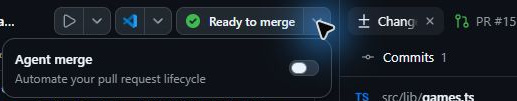
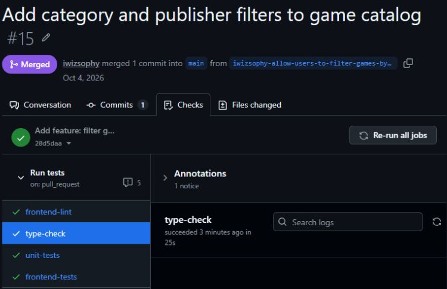

7.1 章の概要
変更をmainへ統合するときは、マージの操作と、変更の品質を判断する作業を分けて考えます。Agent Mergeでは対象PRの確認とマージの操作をエージェントへ任せられますが、何を満たしたらマージしてよいかは人の判断が必要です。
GitHubの「マージできる」という表示と、「必要な検証を終えた」という人の判断も別です。対象PRの差分、マージ先、最新コミットのCIを確認し、エージェントへ任せる範囲を決める方法を学びます。自動化するときも、統合を認めた条件とマージの完了を自分で説明できることが、この章の到達点です。
7.1.1 この章で学ぶこと
| 学ぶこと | できるようになること |
|---|---|
| Agent Mergeの役割 | マージの操作と、変更の品質を判断する作業を分けて説明できる |
| 開始前の品質判断 | 対象PRの差分・マージ先・最新コミットのCIを根拠に、Agent Mergeを開始してよいか判断できる |
| 完了の確かめ方 | AppとGitHubのMergedとマージ先を照合し、後続の作業へ変更を引き継げる |
7.2 取り組む前に
GitHub Copilot appで、前章まで使っていたフィルター機能の実装セッションを引き続き使います。フィルター機能の差分レビュー、単体・E2Eテスト、Playwright MCPによる画面検証と後片付けを終えておいてください。未対応の指摘が残っている場合は、エージェントへ修正を依頼し、修正後の検証結果を確認してから進みます。
GitHubで「マージ可能」であることと、この演習で求める「CIの全ジョブ成功」は同じとは限りません。必須チェックに指定されていないジョブが実行中でも、GitHubはマージを許可する場合があります。保護設定の考え方はGitHub公式の必須ステータスチェックの説明で確認できます。
AppのAgent mergeは、有効にした直後にエージェントが対象PRの処理を始める機能です。マージ可能なPRでは、すぐにMergedへ変わることもあります。Agent mergeを有効にした後に操作許可を見直すことを前提にせず、対象PRの差分とCIを先に確認してください。
7.3 ケース
このケースでは、Tailspin Toysのゲーム一覧をカテゴリと出版社で絞り込むフィルター機能のPRを、自分の演習用リポジトリのmainへ統合します。手動でマージしていた工程のうち、今回エージェントへ任せる範囲を確かめましょう。
| 観点 | このケースで扱う内容 |
|---|---|
| 状況 | 前章までにフィルター機能の実装と、単体・E2Eテスト、Playwright MCPによるブラウザー操作の検証を終えている。フィルター機能のPRはmainへ統合する前の段階にある。 |
| 課題と理由 | 後続の作業でもフィルター機能を使えるよう、PRをmainへ統合する必要がある。マージ可能の表示だけでは、必要な検証を終えたとは判断できない。 |
| 解決策 | フィルター機能のPRは、受講者が差分・マージ先・最新コミットのCI全ジョブ成功を確認してから、Agent Mergeで演習用リポジトリのmainへ統合する。マージの操作を任せても、品質条件の判断と統合結果の確認は受講者が担当する。 |
これまでの手動マージでは、対象PRのCI完了を待ち、マージを自分で実行しました。このケースでもCIの全ジョブ成功までは自分で確認し、以後のPR確認とマージの操作をエージェントへ任せます。本章ではmainへの統合までを扱い、本番環境への公開は含みません。
7.3.1 PRを作成し、最新のCI結果を確認する
- Appで前章まで作業していたフィルター機能の実装セッションを開き、Changesで未対応の差分や不要な一時ファイルがないことを確認します。
- フィルター機能の実装セッションで、通常のCreate PRからPRを作成します。この時点ではAgent mergeを有効にしません。
- 作成されたPRを開き、フィルター機能とその検証に必要な差分が含まれ、自分の演習用リポジトリのmainをマージ先にしていることを確認します。
- GitHubのPR画面で、最新コミットに対するCIの全ジョブが成功するまで待ちます。テスト、lint、型検査などに実行中や失敗が残っていないかを見てください。
CIの完了を待つ前に、GitHubのフィルター機能のPRで実行されるジョブの一覧を見ておきましょう。完了後に同じ一覧を読むと、成功したジョブだけを見て判断していないかを確かめられます。PRに新しいコミットが追加された場合は、古い成功結果を使わず、そのコミットのCIを確認し直してください。
Appでフィルター機能のPRのCI表示が更新されない場合は、App内のPR画面を開き直して確認します。同じPRをGitHubでも開き、最新コミットのCI結果と照合してください。AppのReady to mergeだけで、CIの全ジョブ成功とは判断しません。
7.3.2 Agent Mergeを開始する
- フィルター機能のPRの差分レビューと最新コミットのCI全成功を確認したら、Appでフィルター機能の実装セッションを開きます。セッション上部のReady to merge横にあるメニューを開いてください。
- 対象が今回のフィルター機能のPRであることを確認します。
- Agent mergeのスイッチをOffからOnへ切り替えます。Onへの切り替えで、エージェントが対象PRの処理を始めるため、追加の開始ボタンを押す必要はありません。

GitHub公式では、Agent MergeがPRを確認し、マージを妨げる問題へ対応して、GitHubが許可した時点でマージすると説明しています。公式説明「Merging a pull request」
7.3.3 CIとマージ結果を確認する
- Appでフィルター機能の実装セッションまたはPR画面を開き、対象PRがMergedになったことを確認します。
- GitHubでもフィルター機能の同じPRを開き、演習用リポジトリのmainへMergedになったことと、最新コミットのCI全ジョブが成功したことを照合します。
- エージェントがレビュー対応やCI修復のためにコードを変更した場合は、PRの追加差分と変更後の検査結果も確認します。
- 次章で新しいworktreeを作るときにフィルター機能を引き継げるよう、演習用リポジトリのmainへフィルター機能が統合されたことを確かめます。

画像はフィルター機能のPRをマージした後の表示例です。自分の演習用リポジトリのPR番号を確認し、画像の表示と自分のPRのマージ結果を照合してください。

7.4 結果の整理と振り返り
フィルター機能のPRのマージが完了したら、次の3点を自分の言葉で説明してみてください。対象PRのAgent mergeをOnにしたこと、CIが成功したこと、mainへのマージが完了したことを区別できれば、途中で問題が起きた場合にも確認箇所を絞れます。
| 振り返る問い | 今回の結果で確かめること |
|---|---|
| 人は何を判断したか | 要件を満たす差分、レビュー結果、マージ先、最新CIの全成功 |
| エージェントへ何を任せたか | CI確認後のPR確認とマージの操作。追加修正があれば、その内容も区別する |
| 完了を何で説明できるか | AppとGitHubのMerged、マージ先のmain、成功したCIの一覧 |
今回は、フィルター機能のPRのCI完了を待つ工程を自分で担当しました。エージェントによる追加修正が起きなかった場合は、CI失敗や競合の修復を体験したとは扱わず、実際に任せたPRの確認とマージの操作を振り返ります。Agent Mergeという機能名だけでなく、任せた範囲と確認したマージ結果を説明できることが到達点です。
次は、演習用リポジトリのIssueを同じ画面で比較し、エージェントと作業を計画するキャンバスを使います。第8章「キャンバスを使った計画」へ進んでください。
7.5 補足
7.5.1 手動マージの経験を自動化に生かす
本ワークショップでは、コード生成、自動テスト、MCPによる実ブラウザー操作と、段階的に任せる操作を広げてきました。星評価やコーディング標準を手動でマージしたのは、差分、CI、マージ先を自分で確認するためです。その経験があれば、自動化するときも何を任せたかを説明できます。
今回は第5章でフィルター機能の計画と実装をレビューし、第6章でTailspin Toysの実画面を検証したうえで、演習用リポジトリのmainへのマージをエージェントへ任せました。任せる範囲を広げても、フィルター機能の要件を満たす変更かどうかを判断する責任は人に残ります。
7.5.2 任せる範囲と品質確認
Agent Mergeはバックグラウンドで動作し、Appの再起動後も継続して、マージ後に終了します。待機やマージの操作を任せても、テストに含まれていない要件まではCIの成功だけで判断できません。GitHub公式のAgent Mergeの説明
たとえば、Tailspin Toysでカテゴリを2つ選んだときに、一方のカテゴリに該当するゲームしか表示されない実装でも、件数を十分に検査していなければテストを通ることがあります。第5章と第6章で確認したフィルターの条件を、Agent Mergeを使うときも品質の基準として使ってください。
Agent Mergeの詳細な操作許可を選べる場合は、次の観点でエージェントへ任せる範囲を確認します。許可した操作と、対象PRでエージェントが実際に行った処理は区別してください。
| 任せる操作 | 人が確認すること |
|---|---|
| レビュー指摘への対応 | 指摘の意図を満たし、不要な仕様変更を加えていないか |
| CI失敗の調査と修正 | 検査を弱めて通していないか。修正後に必要な検査を実行したか |
| 他の変更との競合解消 | 両方の変更意図を保っているか |
| 条件を満たしたPRのマージ | 対象PRとマージ先が正しく、レビューと検証を終えているか |
CIの待機も含めてAgent Mergeへ任せたい場合は、対象PRの必須チェックを待つ条件が、自分の権限でのマージにも適用されるかを先に確認します。条件が分からなければ、本章と同じく対象PRのCI全ジョブの成功を待ってからAgent mergeをOnにしてください。ブランチ保護や必須チェックの設定を理解すると、チームでどこまで任せるかを判断しやすくなります。GitHub公式のブランチ保護の説明